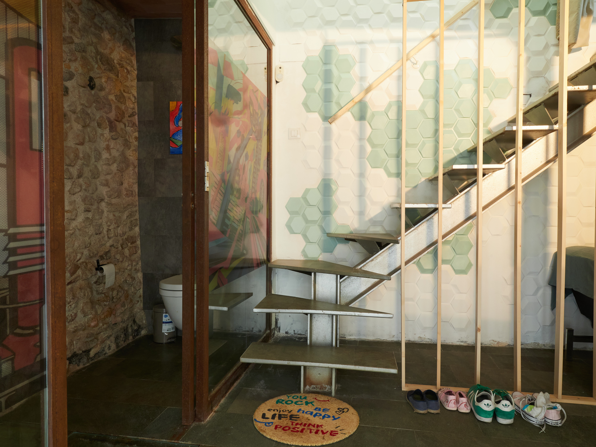
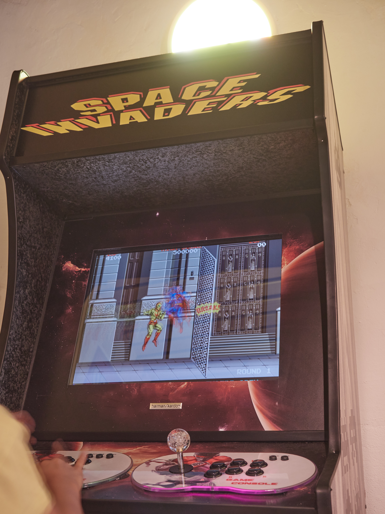
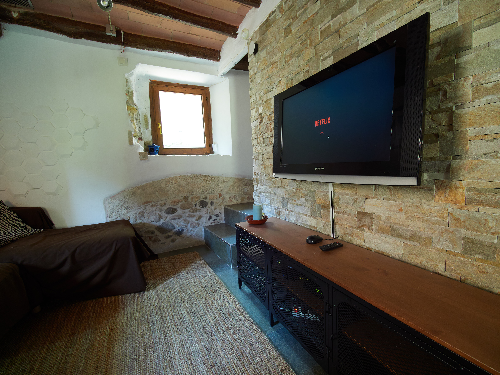
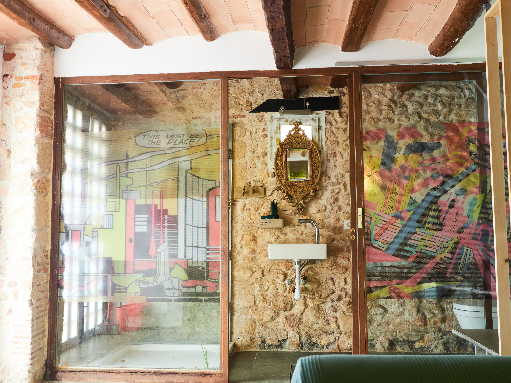
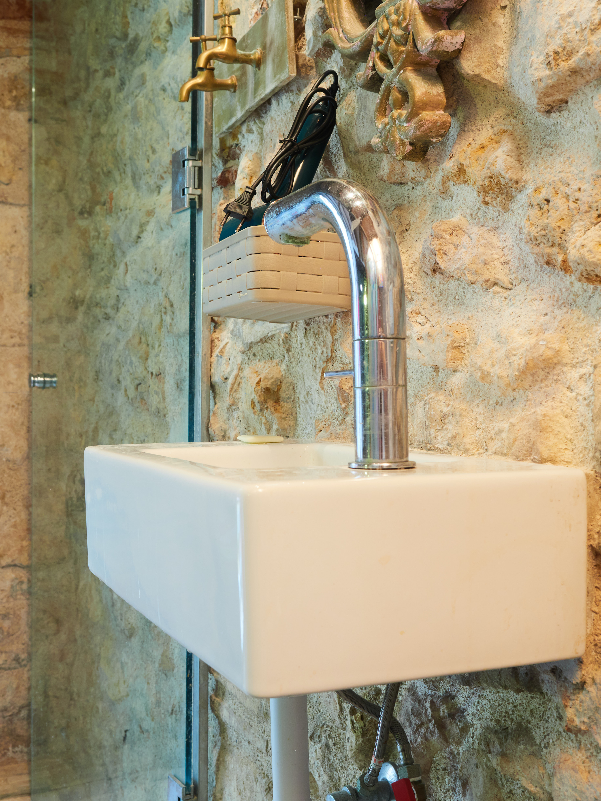
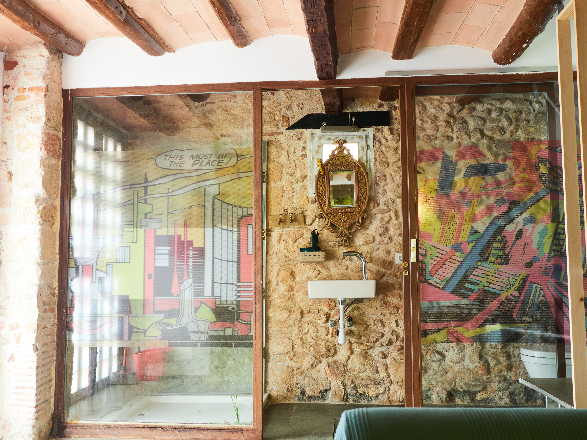
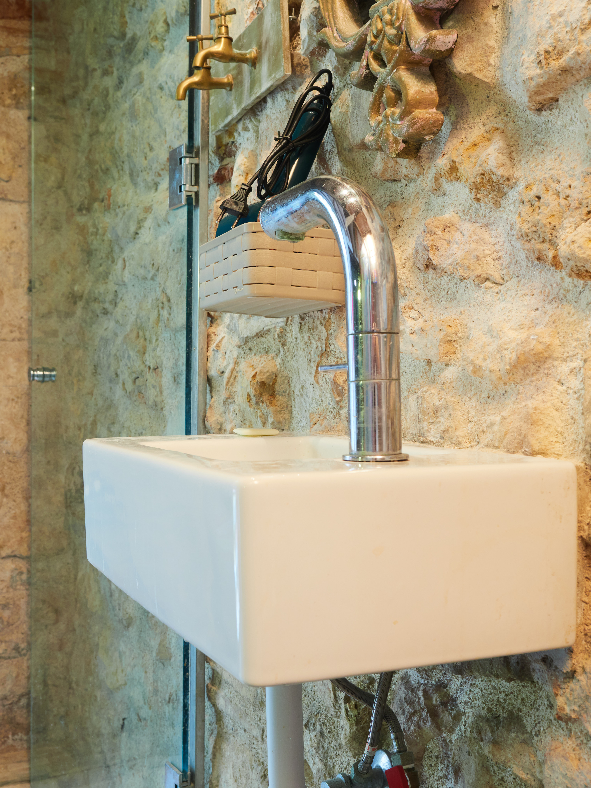

Cal Jueu
...
Date
Teniendo en cuenta que nuestro hogar es uno de los espacios donde pasamos más horas a lo largo de la vida, es una condición imprescindible a la hora de buscar una nueva vivienda que sus características sean adecuadas a nuestra personalidad y nuestros intereses.
Partiendo de esta base, basta con echar un vistazo a las imágenes de esta extraordinaria casa para darnos cuenta de que se trata del espacio ideal para una familia que quiera potenciar su amor por el arte, la cultura y la historia. ¡Tres en uno!
Así pues, si éstas son disciplinas de tu interés, tenemos el placer de ofrecerte una vivienda donde podrás dar rienda suelta a tu imaginación y creatividad, combinando el estilo bohemio más auténtico con el modernismo más atrevido. Todo ello, ¡desde el centro de la Parte Alta de Tarragona! ¿Te lo vas a perder?

La Calle d’en Talavera, junto a la plaza del Foro, acoge una magnífica casa unifamiliar de 141m² con construcción de 1850. Y es que, si bien su interior destaca por potenciar la originalidad y el diseño más actual, de puertas afuera nos espera una estética clásica y un entorno histórico, protagonizado por la proximidad a los restos del antiguo Barrio Judío de la ciudad.
Pero no todo son ruinas: ¡acceder al ambiente más actual de Tarragona será cuestión de pocos pasos! Son sólo 300 los metros que separan la casa de la Plaça de la Font o la Rambla Vella, ofreciendo un sinfín de puntos de interés a tu alcance. ¡Sin olvidarnos que acceder a la Playa del Miracle es cuestión de caminar diez minutos!
Sin más preámbulos, es hora de centrarnos a conocer la casa como tal, ¡que no son pocos los aspectos destacables que ofrece! Disponible en plataformas de turismo vacacional completamente amueblada , combina una estética original junto con elementos característicos de sus orígenes. Tanto es así que aún se conservan sus paredes de piedra, techos de vigas de madera e incluso algunas partes del suelo dejan entrever los restos de la edad media. ¡Un auténtico monumento en casa!
Su distribución en cuatro plantas organiza las estancias de la siguiente manera:
En la planta baja se encuentra una sala con mucho estilo, actualmente encontrarás un baño completo, una zona de juegos y un espacio dedicado a la lavadora y secadora
Subimos hasta el primer piso para acceder a la cocina office, que comparte espacio con la sala de estar. Numerosos electrodomésticos de calidad, una extensa isla central con abundante espacio de almacenamiento y un cómodo espacio de relajación con sofá que aseguran la máxima practicidad.
La siguiente planta nos invita a la habitación de matrimonio, la que se presenta en formato suite, con balcón propio y tres ventanas. ¡La luz natural está más que asegurada! La sala de baño adyacente, cubierta de un elegante solado de piedra oscura, ofrece elementos de alto diseño y está dotada de bidé y plato de ducha con mampara de vidrio. Si todo lo que has visto hasta ahora ya te ha permitido hacer volar la imaginación, ¡la buhardilla no te dejará indiferente! Y es que la planta superior cuenta con un inmenso potencial para convertirse en un espacio ideal donde exprimir tus capacidades artísticas, habilitándolo como espacio creativo, de lectura, lugar de trabajo o incluso un segundo dormitorio. Las opciones son infinitas, ¡y el límite lo pones tú!



 


